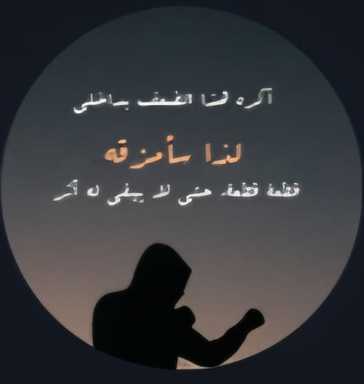

تأكيد الدخول
—
تأكد أنك اخترت اسمك الصحيح. إذا اخترت بالخطأ يمكن إصلاح ذلك عبر زر “تبديل المستخدم”.
اختر صورتك للدخول إلى الواجهة الرئيسية.
قبيلة واعي – قبيلة الموحدون
🕊️ من عيد الفطر إلى عيد الأضحى… نختار الثبات
ثلاث إجابات سريعة تكشف هل أنت في وضع مطمئن، أم تحتاج تدخلًا هادئًا، أم يجب أن تفعّل النجدة الآن قبل أن تكبر الموجة.


